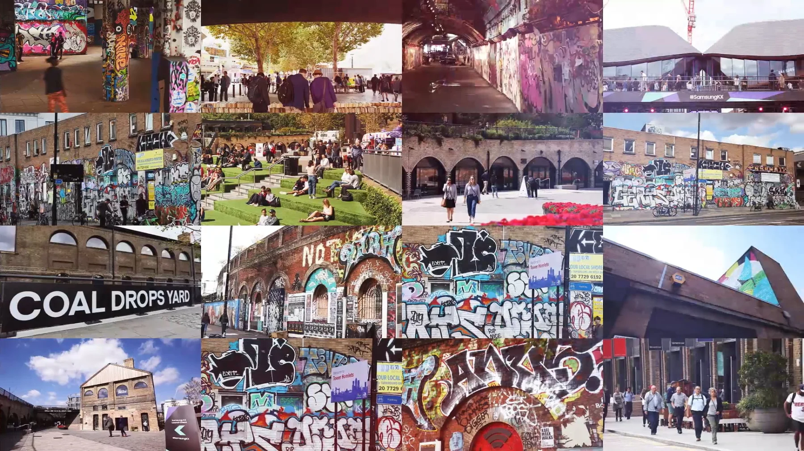

Samsung KX.
Ten metres of curved screen.
Daily lineups.
- Opened
- August 2, 2019
- Location
- Coal Drops Yard
King's Cross, London
20,000 sq ft - Architect
- Heatherwick Studio
(restored Victorian rail buildings) - Setup
- 10-metre vertical curved Samsung screen
+ Galaxy S10 phones as spray-can controllers
Samsung's "Galaxy Graffiti"
Samsung's 20,000 sq ft creative playground at Coal Drops Yard chose Graffiti+ as its centrepiece.
Samsung KX opened on August 2, 2019 — the brand's flagship concept store at Coal Drops Yard, King's Cross. Heatherwick Studio rebuilt two 1850s Victorian rail warehouses into the "kissing rooftops" of Coal Drops Yard, and Samsung's space sat inside, 20,000 square feet of brand experience anchored by the world's first vertical 10-metre-wide curved Samsung screen. Coal Drops Yard sits inside a King's Cross district saturated with graffiti and street art — the neighbourhood already speaks the language, which is part of why a graffiti wall ended up as the centrepiece.
We built the experience that lived on it, in collaboration with Cheil Worldwide. Visitors picked up a Galaxy S10 and used the phone as a spray-can controller — active marker tracking gave precise, phone-based painting on the 10-metre curved wall. Samsung named the feature Galaxy Graffiti. It was the device-in-your-hand made into the tool, years before the same idea returned for the Galaxy Z Flip 7 launches in 2025.
Galaxy Graffiti quickly became the most-visited feature in the store, drawing daily lineups and repeat visitors — first-timers and seasoned writers alike. A ten-metre wall, a phone, daily crowds, people coming back. That's the loop.
Eighteen years. Six continents. One idea, done right.
For eighteen years, Graffiti+ has been putting real creative tools in people's hands — in public, at scale, and always with cultural integrity.
Born from the roots of graffiti culture and built for anyone willing to pick up a custom spray can, the platform transforms retail and brand spaces into shared canvases where guests paint together in real time. From their home in Vancouver to projects across six continents, Graffiti+ has partnered with Samsung, Louis Vuitton, Chanel, Hennessy, Nike and Google to bring authentic, participatory experiences to audiences everywhere.
Ten metres of curved screen. A Galaxy S10 in your hand. Six years before everyone else caught up.
